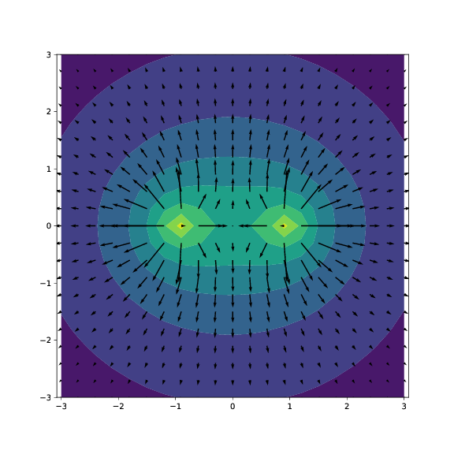
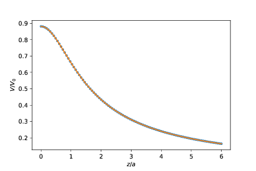
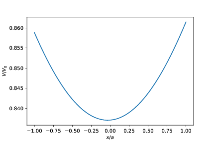

Uke 03/10-09/10: Strøm, motstand og enkle kretser
Læringsmål
Vi beskriver strøm av ladninger ved hjelp av strømtettheten \( \vec{J} \), Ohms lov på differensiell form, \( \vec{J} = \sigma \vec{E} \) og ladningsbevaring, \( \nabla \cdot \vec{J} = - \partial \rho/\partial t \) og bruker det vi kan til å finne resistansen til en motstand for forskjellige motstandsgeometrier. Det er spesielt viktig å lære seg hvordan vi ofte tar utgangspunkt i strømtettheten og bruker dette til å finne det elektriske feltet med Ohms lov når vi skal finne resistansen til en komponent.Test-deg-selv oppgaver
(Disse oppgavene kan du se på før gruppene for å forberede deg til aktiviteten på gruppene.)
Exercise 6.1: Strøm av ioner
Positive ioner strømmer til høyre gjennom en væske, negative ioner strømmer til venstre. Den romlige tettheten og hastigheten til begge typer ioner er identiske. Er det en netto strøm gjennom væsken? (A) Ja, til høyre; (B) Ja, til venstre, (C) Nei, (D) Ikke tilstrekkelig informasjon.
A
Diskusjonsoppgaver for gruppene
Exercise 6.2: Strømtetthet og strøm
Du har en lang stav med kvadratisk tverrsnitt og det går en strøm med homogen strømtetthet rettet langsmed staven. Er strømmen gjennom flaten \( S_1 \) den samme som gjennom flaten \( S_2 \)?

Exercise 6.3: Ladningsoppsamling
Er netto strøm av ladning ut av en lukket overflate alltid null? Hvis ikke, kan du komme med noen moteksempler?
Gruppeoppgaver
Exercise 6.4: Current density
a) For a homogeneous current density \( \vec{J} = J_0 \hat{x} \), what is the current through all the surfaces of a cube with corners at \( (-1,-1,-1) \), \( (-1,+1,-1) \), \( (+1,-1,-1) \), \( (+1,+1,-1) \), \( (-1,-1,+1) \), \( (-1,+1,+1) \), \( (+1,-1,+1) \), and \( (+1,+1,+1) \) all measured in units of \( a \).
\( I=\pm J_0 4 a^2 \) for the surfaces through \( (\pm1,0,0) \), and zero for the other surfaces.
We notice that the area of the each of the squares are \( 4 a^2 \). The current is \( I = \vec{J} \cdot \vec{S} \). It is only the surfaces with normals in the \( \hat{x} \) direction that will have non-zero currents. For the surface through \( (1,0,0) \) the current is \( 4 a^2 J_0 \) since the surface normal is in the positive \( x \)-direction, and for the surface through \( (-1,0,0) \) the current is \( -4 a^2 J_0 \) since the surface normal is in the negative \( x \)-direction.
b) A block with uniform charge density \( \rho \) is moving with a constant velocity \( \vec{v} = v_0\hat{z} \). What is the current density \( \vec{J} \) at a specific point in space inside the block (the point does not move along with the block). What would the current density \( \vec{J} \) be if the point moved along with the block?
\( \vec{J} = \rho v_0 \hat{z} \).
The current density will be in the direction of \( \vec{v} \). The amount of charge moving through a small surface \( S \) with a normal in the \( \hat{z} \) direction in a time interval \( dt \) will be \( dq = \rho dV = \rho S v_0 dt \), thus \( I = dq/dt = \rho S v_0 \) and the current density will be \( \vec{J} = \rho v_0 \hat{z} \).
Exercise 6.5: Cylindrical resistor
We will now look at charges that are leaking across the cylindrical membrane of a part of the axon of length \( L \). We will assume that the myelin sheath is leaky (a conductor with conductivity \( \sigma \)) and that there is a radially-symmetric current density \( \vec{J} \) leaking across it due to a potential difference. We will find the resistance \( R \) of a piece of the cylinder of length \( L \). We assuming that the inner part of the cylidrical shell is connected to a potential \( V \) and that the outer part of the shell is connected to a potential \( V=0 \).
We will find the resitance of this system by (i) making a drawing of the system, (ii) drawing the expected current density, (iii) finding the electric field for this current density, (iv) finding the potential by integrating the electric field, and (v) finding the resistance by relating the current to the potential difference. (Notice the similarity of this method and the method you used to find the capacitance!)
a) Make a drawing of the cylindrical system. Sketch the current density.
b) Given that there is a radially-symmetric current density, find the current density \( \vec{J} \) expressed in terms of the total current \( I \).
Integrate the current density along a cylindrical surface.
We find the current density, by realizing that the current must be the same through each cylindrical surface with radius \( r \) --- due to symmetry. The current \( I \) is therefore found from the surface integral of \( \vec{J} \) over the cylindrical surface \( S \): $$ \begin{equation} I = \int_S \vec{J} \cdot d \vec{S} = 2 \pi r L J \, \Rightarrow \, J = I/(2 \pi r L) \; . \tag{6.1} \end{equation} $$ This is only valid for \( a < r < b \), otherwise the current density is zero.
c) Find the electric field \( \vec{E} \) by using the current-density version of Ohm's law.
\( \vec{E} = I/(2 \pi r L \sigma) \, \hat{r} \) when \( a < r < b \) and \( 0 \) otherwise.
The plan is to find the electric field by first finding the electric current density \( \vec{J} \) and then finding the electric field from the current density using Ohm's law, \( \vec{E} = (1/\sigma) \vec{J} \). Based on the current density we found above, we can use Ohm's law to find: $$ \begin{equation} \vec{E} = \frac{1}{\sigma} \vec{J} = \frac{I}{2 \pi r L \sigma}\hat{r} \; , \tag{6.2} \end{equation} $$ when \( a < r < b \), otherwise \( \vec{E} = 0 \).
d) Use the electric field to relate the current \( I \) to the voltage difference between the inner \( V(r=a) \) and outer \( V(r=b)=0 \) surfaces of the axon.
\( V = I/(2 \pi L \sigma) \, \ln (b/a) \)
We find the potential by integrating the electric field from \( r=a \) to \( r=b \) where \( V(b)=0 \): $$ \begin{equation} V(a)-V(b) = V(a)-0=V(a) = \int_{a}^{b} \frac{I}{2 \pi r L \sigma}dr = \frac{I}{2 \pi L \sigma} \ln (b/a) \; . \tag{6.3} \end{equation} $$
e) Find the resistance of the cylinderical shell. Is this the resistance for flow along the axon?
\( R = \ln(b/a)/(2 \pi L \sigma) \)
The resistance is found from \( R=V/I \), giving $$ \begin{equation} R = \frac{V}{I} = \frac{I}{2 \pi L \sigma I} \ln (b/a) = \frac{\ln(b/a)}{2 \pi L \sigma} \tag{6.4} \end{equation} $$
f) Interpret these expressions. Does the current you found actually depend on the length of the axon? Does the resistance?
Hjemmeoppgaver
Exercise 6.6: Lightning
Lightning strikes in one end of a lightning rod of steel and induces a current of \( 30 000 \) A which lasts for \( 65\text{ }\mathrm{\mu}\text{s} \). The lightning rod is a \( 1 \) m long and \( 2 \) cm in diameter, and the other end is connected to the ground through a \( 40 \) m copper wire with a diameter of \( 5 \) mm. The conductivity of steel and copper is respectively \( \sigma_{\text{steel}} = 5.0\cdot 10^6 \mathrm{ \Omega}^{-1}\text{m}^{-1} \) og \( \sigma_{\text{copper}} = 5.8\cdot 10^7 \mathrm{ \Omega}^{-1}\text{m}^{-1} \).
a) Find the potential difference between the top of the lightning rod and the bottom of the copper wire as the current is passing through.
\( 1.1 \) kV
We know that \( V = RI \) where \( R = \frac{L}{A\sigma} \), \( L \) is the length of the conductor, \( A \) is the cross-sectional area, and \( \sigma \) is the conductivity. The two parts of the conductor are connected in series so that the resistances can be added: $$ \begin{eqnarray} R &=& \frac{L_\text{steel}}{A_\text{steel}\sigma_\text{steel}} + \frac{L_\text{copper}}{A_\text{copper}\sigma_\text{copper}} \\ &=& 0.036 \mathrm{\Omega} \end{eqnarray} $$
Ls = 1.0
As = pi*0.01**2
ss = 5e6
Lc = 40
Ac = pi*0.0025**2
sc = 5.8e7
Rs = Ls/(As*ss)
Rc = Lc/(Ac*sc)
R = Rs + Rc
print(R)
0.03576046928230311
Ohm's law states that \( V = RI \), so that the potential across the lightning rod is $$ \begin{equation} V = RI = 1072 \text{ V} \simeq 1.1 \text{ kV} \tag{6.5} \end{equation} $$
I = 30000
V = R*I
print(V)
1072.8140784690931
b) Find the total energy dissipated in the lightning rod and the copper wire from the lightning strike.
\( 2.1 \) kJ
The dissipated power is \( P = VI = RI^2 \), and dissipated energy at constant current over a given time \( t \) is $$ \begin{equation} E = Pt = RI^2 t = 2091 \text{ J} \tag{6.6} \end{equation} $$
t = 65e-6
P = R*I**2
E = P*t
print(E)
2091.9874530147317
Exercise 6.7: Sfærisk symmetrisk strøm
Vi skal nå se på to konsentriske kuleskall, laget av metall, med radius \( a \) og \( b \) der \( (a < b) \). I sjiktet mellom kuleskallene er det et svakt ledende materiale med konduktivitet \( \sigma \). Husk at konduktivitet er definert som \( \sigma \equiv1/\rho \), der \( \rho \) er resistiviteten til materialet.
a) Anta at ved tiden \( t=0 \) finnes det en ladning \( +Q \) på det innerste kuleskallet, og en ladning \( -Q \) på det ytterste skallet. Finn strømtettheten som funksjon av posisjon mellom kuleskallene, \( \vec J = \vec J(r). \)
Stømtetthet \( J=I/A \). Resistiviteten er definert som \( \rho=E/J \). Vi bruker Gauss lov til å finne det elektriske feltet mellom kuleskallene. Feltet er \( E(r) = \frac{Q}{4\pi\epsilon_0 r^2} \) for \( a < r < b \). Dermed er strømtettheten $$ \begin{equation} J(r) = E(r)/\rho = \sigma E(r) = \frac{\sigma Q}{4\pi\epsilon_0 r^2} \tag{6.7} \end{equation} $$
b) Finn strømmen \( I(t=0) \) fra det innerste kuleskallet til det ytterste.
Når vi kjenner strømtettheten over et kuleskall kan vi finne strømmen: $$ \begin{equation} I = JA = \frac{\sigma Q}{4\pi\epsilon_0 r^2} \times 4\pi r^2 = \frac{\sigma Q}{\epsilon_0} \tag{6.8} \end{equation} $$
c) Finn resistansen i materialet mellom kuleskallene.
Resistansen kan beregnes på flere måter. Her velger vi å integrere resistiviteten. $$ \begin{equation} R = \int_a^b \frac{\rho dr}{4\pi r^2} = -\frac{\rho}{4\pi} \left[\frac{1}{r} \right]_a^b = \frac{\rho}{4\pi} \left(\frac{1}{a} - \frac{1}{b} \right) = \frac{1}{4\pi\sigma} \left(\frac{1}{a} - \frac{1}{b} \right) \tag{6.9} \end{equation} $$
Exercise 6.8: Resistivitet i en konusformet leder
Vi har en konusformet (avkappet kjegle) leder med resistivitet \( \rho \). Radiene i endene er \( r_1 \) og \( r_2 \) og lengden er \( L \).

a) Beregn motstanden mellom endeflatene i lederen.
Vi begynner med å finne radien som funksjon av hvor på konusen vi er: $$ \begin{align} r(z) = r_1 + \frac{r_2 - r_1}{L} z \tag{6.11} \end{align} $$
Videre ønsker vi å finne motstanden ved å integrere opp infinitesimale sylindere med høyde \( \d z \), siden vi vet at motstanden i en sylinder er \( \frac{\rho}{\pi r^2}h \). $$ \begin{align} R = \int_{z=0}^L \frac{\rho}{\pi r^2} \d z \tag{6.12}\\ &= \int_{r = r_1}^{r_2} \frac{\rho}{\pi r^2}\frac{L}{r_2-r_1} \d r \tag{6.13}\\ &= \frac{\rho L}{\pi (r_2-r_1)} \left[-\frac{1}{r}\right]_{r = r_1}^{r_2} \tag{6.14}\\ &= \frac{\rho L}{\pi r_1 r_2} \tag{6.15} \end{align} $$
b) Sjekk at resultatet ditt er konsistent med motstanden i en sylinderformet leder: \( R = \rho L / \pi r^2 \).
Vi setter inn for \( r_1 = r_2 = r \), og får $$ \begin{equation} R = \frac{\rho L}{\pi r^2} \tag{6.16} \end{equation} $$ Som er uttrykket for motstanden i en sylinderformet leder.
c) På en eller annen måte klarer vi å gi konusen en strømtetthet på \( |\mathbf{J}| = a r \) rettet langs konusaksen. Finn forskjellen i strøm fra den ene enden til den andre. Vil denne lederen forbli nøytral over tid?
\( \Delta I_{r_2-r_1} = a\pi (r_2^3 - r_1^3) \). Nei.
Siden strøm er endring i ladning per tid, og denne endringa ikke er lik over alt i lederen, så vil det hope seg opp med ladning. Lederen vil ikke forbli nøytral over tid.
Exercise 6.9: Leaky coaxial cable
A 10 km long coaxial cable lies on the ocean floor. The internal radius is \( a = 15 \) mm, and the external is \( b = 30 \) mm. See the figure. The cable itself is made of a superconductor, and the voltage carried by the cable is \( V_0 = 520 \) V.

a) What is the current density \( \vec{J} \) inside the cable?
\( \vec{J} = \frac{\sigma V_0}{r \ln \frac{b}{a}}\rhat \)
We use Gauss' law on a cylinder of length \( L \) and radius \( a < r < b \) inside the coax cable. Due to cylindrical symmetry we get $$ \begin{equation*} \vec{E} = \frac{\rho}{2 \pi \epsilon r}\rhat \; , \end{equation*} $$ where \( \rho \) is the charge density per unit length in the cable. As the value of \( V_0 \) is known, we can eliminate \( \rho \) from the above by calculating $$ \begin{eqnarray*} V_0 &=& \int_a^b \vec{E}\cdot \d\vec{l} = \int_a^b Edr = \frac{\rho}{2 \pi\epsilon}\int_a^b\frac{1}{r} \d r = \frac{\rho}{2 \pi\epsilon} \ln \frac{b}{a}\\ \Rightarrow \rho &=& \frac{2 \pi \epsilon V_0}{\ln \frac{b}{a}}. \end{eqnarray*} $$ Insert \( \rho \) into the equation for \( \vec{E} \) and apply Ohms law to get $$ \begin{equation} \vec{J} = \frac{\sigma V_0}{r \ln \frac{b}{a}}\rhat \; , \label{} \end{equation} $$ for \( a < r < b \).
b) At one point the cable gets a leak and the entire space between the conductors are filled with seawater (\( \sigma = 4 \Omega^{-1}\text{m}^{-1} \)).\\ How much power is lost to the seawater inside the cable?
\( P_J = 98 \) GW
We find the power loss by computing the following integral over the volume \( v \) (all of the space between the conductors in the cable): $$ \begin{eqnarray*} P_J &=& \int_v \vec{J}\cdot \vec{E} \d v \\ &=& \int_0^L\int_0^{2\pi}\int_a^b \frac{V_0^2 \sigma}{\left( \ln \frac{b}{a}\right)^2} \frac{1}{r^2} r \d r \d\phi\d z \\ &=& \frac{V_0^2 \sigma}{\left( \ln \frac{b}{a}\right) ^2}\left[ L\cdot 2\pi\cdot (\ln b - \ln a) \right] \\ &=& \frac{2\pi \sigma V_0^2 L}{\ln \frac{b}{a}}. \end{eqnarray*} $$ Insert the given values to get \( P_J = 98 \) GW.
c) There is a generator connected to one of the ends of the cable. When the cable is filled with water, what is the resistance seen by this generator? Comment on this value in regards to the value of \( P_J \).
We have \( P_J = \frac{V_0^2}{R} \). Solve for \( R \) to get \( R = 2.76 \mu \Omega \).
The resistance is very small, which might lead one to think that the energy loss is minuscule. This is, however, not the case as the power loss due to the sea water is \( P_J = 98 \) GW. This goes to show that there are several factors, not just the magnitude of the resistance, involved in the size of the energy loss.
Innleveringsoppgave
Exercise 6.10: Motstand av to sylindere
a) En motstand består av en sylinder med radius \( r_0 \), lengde \( L \) og konduktivitet \( \sigma \). Finn motstanden til sylinderen i lengderetningen.
Fordi sylinderen ikke overraskende er sylindersymmetrisk bruker vi sylinderkoordinater og legger sylinderen langs \( z \)-aksen. Vi antar at det går en strøm \( I \) gjennom sylinderen. Hvordan er denne fordelt i et tverrsnitt gjennom sylinderen? Fordi sylinderen er homogen, antar vi at strømtettheten er homogen, \( J_z = I/A = I/(\pi r_0^2) \). Ohms lov gir at at det elektriske feltet er \( E_z = J_z/\sigma = I/(\sigma \pi r_0^2) \). Spenningsforskjellen er da gitt som $$\Delta V = \int_0^L E_z \d z = \frac{I L }{\sigma \pi r_0^2} = \frac{L }{\sigma \pi r_0^2} I \; .$$ Og dermed er motstanden $$R = \frac{L }{\sigma \pi r_0^2} \; .$$
(Kommentar som ikke er en del av oppgaven: Merk at elektrisk strøm er ganske forskjellig fra f.eks. strøm av vann i et rør. For strøm av vann i et rør, henger vannet igjen på ytterkanten av røret og det er vannets motstand mot hastighetsforskjeller på tvers av strømningsretningen - kalt viskositet - som gjør at det blir en forskjell i strømtettheten på tvers av en et rør. Strøm av elektroner i en dårlig leder er mer som strøm gjennom et porøs materiale, hvor elektronene merker en motstand mot strømmen pga. vekselvirkninger med det underliggende materialet. Derfor er det ikke en hastighetsvarisjon på tvers av en elektrisk kabel - i alle fall ikke på grunn av denne effekten).
b) En motstand består av to sylindere. Den første har radius \( a \) og den andre har radius \( a/2 \). Begge har lengde \( L/2 \) og har konduktivitet \( \sigma \). Du kan anta sylindrene er skjøtet sammen med et tynt lag med en god leder. Finn motstanden til denne sylinderen i lengderetningen.
Denne oppgaven kan vi løse på (minst) to forskjellige måter om begge er fullgode: (i) bruke seriekoblinger av mostander, (ii) regne ut motstanden for den kombinerte komponenten.
Seriekopling: Siden motstandene er koblet sammen med en god leder, kan vi anta at de er koblet etter hverandre i serie. Den totale motstanden er da summen av motstanden. Motstanden til sylinderen med radius \( a \) og lengden \( L/2 \) er \( R_1 = \frac{L/2}{\sigma \pi a^2} = \frac{L}{2 \sigma \pi a^2} \). Motstanden til sylinderen med radius \( a/2 \) og lengden \( L/2 \) er \( R_2 = \frac{L}{2 \sigma \pi (a/2)^2} = \frac{2L}{\sigma \pi a^2} \). Til sammen blir motstanden til hele komponenten $$R = R_1 + R_2 = \frac{L}{2 \sigma \pi a^2} + \frac{2L}{\sigma \pi a^2} = \frac{5L}{2\sigma \pi a^2} \; .$$
Kombinert komponent: Du kan også løse oppgaven ved å finne det elektriske feltet i hver del av komponenten. Vi antar at det går en strøm \( I \) gjennom komponent. Den må være den samme i begge sylindrene, men strømtettheten blir forskjellig. I komponenten med radius \( a \) blir strømtettheten \( J_{1,z} = I/(\pi a^2) \), mens i komponenten med radius \( a/2 \) blir strømtettheten \( J_{2,z} = I/(\pi (a/2)^2)= 4I/(\pi a^2) \). Ohms lov for hver av de to sylindrene gir at \( E_{1,z} = J_{1,z}/\sigma \) og tilsvarende \( E_{2,z} = J_{2,z}/\sigma \). Spenningsfallet over hver av de to sylindrene finner vi ved å integrere det elektriske feltet over avstanden \( L/2 \), slik at \( V_1 = E_{1,z}L/2 \) og \( V_2 = E_{2,z}L/2 \) som gir hvor \( V_1 \) er spenningsfellet over sylinderen med radius \( a \) og \( V_2 \) er spenningsfallet over sylinderen med radius \( a/2 \). Det totale spenningsfallet blir $$V = V_1 + V_2 = \frac{I (L/2)}{\sigma \pi a^2}I/(\pi a^2) + \frac{4I (L/2)}{\sigma \pi a^2} = \frac{5 L}{2\sigma \pi a^2} \, I $$ Dette gir oss den samme motstanden i begge metodene - heldigvis!
c) En motstand består av 3 sylindere, hver med lengde \( L/3 \) og konduktivitet \( \sigma \). Den først har radius \( a \), den andre har radius \( 3a/4 \), og den tredje har radius \( 2a/4=a/2 \). Finn motstanden til denne sylinderen i lengderetningen.
Her kan vi bruke samme metoder som ovenfor. Vi velger å legge sammen motstander i serie. Hva blir motstandene? $$R_1 = \frac{(L/3)}{\sigma \pi a^2} = \frac{L}{3 \sigma \pi a^2}$$ $$R_2 = \frac{(L/3)}{\sigma \pi (3a/4)^2} = \frac{16 L}{27 \sigma \pi a^2}$$ $$R_3 = \frac{(L/3)}{\sigma \pi (a/2)^2} = \frac{4 L}{3 \sigma \pi a^2}$$ Summen av motstandene blir da: $$R = R_1 + R_2 + R_3 = \frac{L}{\sigma \pi a^2}\left( \frac{9}{27}+\frac{16}{27} + \frac{36}{27}\right) = \frac{L}{\sigma \pi a^2} \frac{61}{27} $$
d) I oppgave c, betyr rekkefølgen på sylindrene noe? Begrunn svaret. Hvis vi fortsetter oppdelingen i mindre og mindre biter etter mønster av det vi har gjort til nå, kan man få noe som likner på en konisk motstand. Synes du dette er en god modell for en konisk motstand? Begrunn svaret.
Nei, rekkefølgen betyr ikke noe, fordi rekkefølgen på leddene i summen for \( R \) kan stokkes fritt om. (Eller vi kan endre på rekkefølgene av komponentene). Det betyr at dette ikke er god modell for en konisk motstand. I en virkelig konisk motstand vil det også være komponenter av \( \vec{J} \) som ikke er parallel med aksen til sylinderen/konet, og det har vi ikke tatt hensyn til her.
Lang innleveringsoppgave 01 (7 poeng, frist 9/10)
Denne oppgaven er laget slik at den vil likne på oppgaver dere kan få på 4-timers skole-eksamen med Jupyter notebooks. Det er derfor lurt å løse den i en Jupyter notebook, men vi anbefaler å levere som pdf. De siste diskusjonsdelene er kanskje noe vanskeligere enn vi forventer på eksamen, mens programmeringsdelen er helt innenfor det vi forventer at dere klarer å løse på 4 timer på skolen. Mengden og typen på oppgitt kode på eksamen er også realistisk i forhold til eksamen. Lykke til!
Exercise 6.11: Kondensator av to krester
Vi skal i denne oppgaven studere en kondensator som består av to ledere. Hver leder består av 4 linjestykker av lengde \( 2a \). De to lederne er plassert i en avstand \( d=2a \) fra hverandre. Systemet er illustrert til venstre i figuren (a).

Først skal vi se på et enkelt kvadrat, som vist til høyre (b) figuren, før vi ser på systemet med begge kvadratene. Anta at kvadratet som består av fire linjestykker har ladningen \( Q \).
a) Hva blir det elektriske feltet i origo? Hva kan vi si om det elektriske potensialet uten å regne det ut? Begrunn svarene dine.
Det elektriske feltet i origo blir null fordi ladningsfordelingen er symmetrisk om origo. Men det elektriske potensialet blir ikke nødvendigvis null. Hvis vi fører en testladning inn langs med \( z \)-aksen vil det være et elektrisk felt som peker vekk fra kvadratet for alle \( z>0 \). Derfor vil potensialet være større en det potensialet er uendelig langt vekk fra kvadratet. Langt vekk fra origo forventer vi at det elektriske potensialet vil oppføre seg som potensialet fra en punktladning i origo, dvs. at potensialet tilnærmet vil være \( V(r) \simeq Q/(4 pi\epsilon_0 r) \) for \( r \gg a \).
b) Vis at det elektriske potensialet langs \( z \)-aksen for kvadratet med ladning \( Q \) er \( V(z) = \frac{Q}{4 \pi \epsilon_0 a} \textrm{arcsinh} \frac{a}{\sqrt{z^2 + a^2}} \).
Se først på ett enkelt linjestykke og bruk deretter superposisjonsprinsippet.
Du kan få bruk for integralet \( \int \frac{\d x}{\sqrt{C^2 + x^2}} = \textrm{arcsinh} \frac{x}{C} \).
Vi finner potensialet ved først å finne potensialet for ett enkelt linjestykke og derettet summere bidraget fra hvert av de fire linjestykkene. La oss se på ett enkelt linjestykke som ligger langs \( y \)-aksen i \( y=a \) fra \( x=-a \) til \( x=a \). Et punkt på denne linjer er gitt som \( \vec{r}'=(x',a,0) \). Vi ønsker å finne potensialet i punktet \( \vec{r}=(0,0,z) \) slik at \( \vec{R} = \vec{r}- \vec{r}' = (0,0,z)-(x',a,0) = (-x',-a,z) \). Vi finner da det elektriske potensialet ved $$\int_{-a}^{a}\frac{\rho_l \d x'}{4 \pi \epsilon_0 |R|} = \int_{-a}^{a}\frac{\rho_l \d x'}{4 \pi \epsilon_0 \sqrt{a^2 + z^2 + (x')^2}} \; ,$$ hvor \( \rho_l = (Q/4)/(2a) = Q/(8a) \). Vi trekker konstantene utenfor integralet og set at vi da får det oppgitte integralet: $$\frac{(Q/8a)}{4 \pi \epsilon_0} \int_{-a}^{a} \frac{\d x'}{\sqrt{a^2 + z^2 + (x')^2}} \; .$$ Vi setter inn grensene som er \( x'=-a \) og \( x'=+a \) og bruker at \( \textrm{arcsinh}(-a)=-\textrm{arcsinh}(a) \): $$\frac{(Q/8a)}{4 \pi \epsilon_0} \int_{-a}^{a} \frac{\d x'}{\sqrt{a^2 + z^2 + (x')^2}} = \frac{(Q/8a)}{4 \pi \epsilon_0} \left( 2\textrm{arcsinh}\frac{a}{\sqrt{a^2+z^2}}\right) = \frac{Q}{16\pi \epsilon_0 a}\left(\textrm{arcsinh}\frac{a}{\sqrt{a^2+z^2}}\right) \; .$$ Det var bidraget fra ett linjestykke. Det totale potensialet blir fire ganger så stort: $$V(z) = \frac{Q}{4\pi \epsilon_0 a}\left(\textrm{arcsinh}\frac{a}{\sqrt{a^2+z^2}}\right) \; .$$
Du får oppgitt et program som finner det elektriske potensialet til en dipol i \( xy \)-planet. Du kan ta utgangspunkt i dette programmet når du skal løse de neste oppgavene, men du må skrive det om slik at det passer til den oppgitte problemstillingen.
# Potensialet til en dipol i xy-planet
import numpy as np
import matplotlib.pyplot as plt
def epotlist(r,Q,R):
V=0
for i in range(len(R)):
Ri = r - R[i]
qi = Q[i]
Rinorm = np.linalg.norm(Ri)
V = V + qi/Rinorm
return V
Q = []
R = []
Q.append(1.0)
R.append(np.array([1,0,0]))
Q.append(-1.0)
R.append(np.array([-1,0,0]))
Lx = 3
Ly = 3
N = 21
x = np.linspace(-Lx,Lx,N)
y = np.linspace(-Ly,Ly,N)
rx,ry = np.meshgrid(x,y)
V = np.zeros((N,N),float)
for i in range(len(rx.flat)):
r = np.array([rx.flat[i],ry.flat[i],0.0])
V.flat[i] = epotlist(r,Q,R)
plt.contourf(rx,ry,V)
c) Skriv et program som finner det elektriske potensialet i \( yz \)-planet. Visualiser potensialet og det elektriske feltet.
Først setter vi opp firkanten
# Vi lager en firkant
a = 1.0
N = 20
q = 1.0
Q = []
R = []
# Linje 1
for i in range(N):
xi = -a + (i/N)*2*a
yi = -a
ri = np.array([xi,yi,0.0])
Qi = q/(4*N)
Q.append(Qi)
R.append(ri)
# Linje 2
for i in range(N):
xi = -a + (i/N)*2*a
yi = a
ri = np.array([xi,yi,0.0])
Qi = q/(4*N)
Q.append(Qi)
R.append(ri)
# Linje 3
for i in range(N):
yi = -a + (i/N)*2*a
xi = -a
ri = np.array([xi,yi,0.0])
Qi = q/(4*N)
Q.append(Qi)
R.append(ri)
# Linje 4
for i in range(N):
yi = -a + (i/N)*2*a
xi = a
ri = np.array([xi,yi,0.0])
Qi = q/(4*N)
Q.append(Qi)
R.append(ri)
# Merk at denne mangler ett enkelt punkt i (1,1,0)
# (Vi bekymrer oss ikke for det nå)
Så sjekker vi at vi har laget riktig firkant ved å plotte den. (Dette ble det ikke spurt om i oppgaven, så det er ikke noe trekk for ikke å gjøre det og ikke noe bonus for å gjøre det).
# Vi plotter punktene i R for å sjekke at de utgjør et kvadrat
Rplot = np.array(R)
xplot = rr[:,0]
yplot = rr[:,1]
plt.plot(xplot,yplot,'.')
plt.axis('equal')
# Vi regner ut det elektriske potensialet i et område i yz planet
Ly = 3
Lz = 3
N = 21
y = np.linspace(-Ly,Ly,N)
z = np.linspace(-Lz,Lz,N)
ry,rz = np.meshgrid(y,z)
V = np.zeros((N,N),float) # Initialize V
for i in range(len(rz.flat)):
r = np.array([0.0,ry.flat[i],rz.flat[i]])
V.flat[i] = epotlist(r,Q,R)
Og visualiserer resultatene
plt.figure(figsize=(8,8))
plt.contourf(ry,rz,V)
Ez,Ey = np.gradient(-V)
plt.quiver(ry,rz,Ey,Ez)
plt.axis('equal')
Resultatet er vist i figuren:

d) Kontroller resultatet ditt ved å sammenlikne med det analytiske uttrykket.
Visualiser det analytiske og det numeriske uttrykket \( V(z) \) i det samme plottet. (Hvis de ikke faller oppå hverandre har du gjort noe galt).
Vi sammenlikner med det analytiske uttrykket langs \( z \)-aksen for \( z>0 \) ved å regne ut verdiene langs \( z \)-aksen i modellen og sammenlikne med det analytiske uttrykket.
# Vi regner V ut i enheter av 1/(4 pi epsilon0 a)
z = np.linspace(0,6,100)
# Analytisk løsning
Va = np.arcsinh(1/np.sqrt(1+z**2))
plt.plot(z,Va,'.')
# Numerisk løsning
Vz = np.zeros(len(z))
for i in range(len(z)):
zi = z[i]
r = np.array([0,0,zi])
Vz[i] = epotlist(r,Q,R)
plt.plot(z,Vz)
plt.xlabel('$z/a$')
plt.ylabel('$V/V_0$')
(Merk at hvis du her bruker det samme grove gitteret som i forrige oppgave til sammenlikningen vil vi vanligvis trekke 1 poeng på denne oppgaven, selv om den ellers er riktig løst.)
Resultatet er vist i figure:

Vi skal nå se på et system som består av to slike kvadrater, ett med ladning \( +Q \) i \( z=0 \) og ett med ladning \( -Q \) som er i \( z= 2a \) slik at de har en avstand \( d = 2a \) fra hverandre.
e) Vi ønsker å finne en tilnærming til potensialforskjellen mellom de to kvadratene for å kunne estimere kapasitansen til systemet. Som en første tilnærming ønsker vi å bruke uttrykket vi har funnet for potensialet langs \( z \)-aksen. Vi antar at bidraget fra det positive kvadratet til potensialforskjellen mellom de to kvadratene kan tilnærmes som forskjellen i potensial mellom \( z=0 \) og \( z=2a \). Hva blir den totale potensialforskjellen mellom kvadratene? Hva blir kapasitansen til systemet med denne tilnærmingen?
Det holder å se på et av kvadratene og så bruke superposisjonsprinsippet for å finne potensialforskjellen mellom de to kvadratene.
Bidraget fra det positivt ladede kvadratet blir \( \Delta V_1 = V_z(0) - V_z(2a) \).
Hva blir bidraget fra det negativt ladede kvadratet? Her er det tilstrekkelig å kommentere kort at dette bidraget blir det samme pga symmetri.
Men vi kan også ønske et mer komplett argument. Det kan gå som følger: Vi innser at arbeidet fra det positive kvadratet på en positiv ladning som beveger seg fra det positive kvadratet til det negative kvadratet langs en bane \( C_1 \), \( W_1 = \int_{C_1}\vec{F}_1 \cdot \d \vec{r} = \Delta V_1 q \), blir like stort som arbeidet fra det negative kvadratet på en negativ ladning \( -q \) som beveger seg fra det negative kvadratet til det positive kvadratet langs en bane \( C_2 \) (som er symmetrisk om planet \( z=a \)), \( W = \int_{C_2} \vec{F}_2 \cdot \d \vec{r} = W_1 \). Men vi ønsker å finne arbeidet \( W_2 \) fra det negative planet på en positiv ladning som beveger seg i motsatt retning, fra det positive kvadratet til det negative kvadratet. Her blir både arbeidet motsatt vei og kraften virker motsatt vei (fordi ladningen er positiv), slik at \( W = \int_{-C_2} -\vec{F}_2 \cdot \d \vec{r} = \int_{C_2} \vec{F}_2 \cdot \d \vec{r} = W_2 = W_1 \). Det totale arbeidet på en positiv ladning blir derfor \( W_T = 2 W_1 \). Potensialforskjellen blir derfor \( \Delta V = 2 \Delta V_1 \). Denne forklaringen var omstendelig, men ganske presis. Det vil her være tilstrekkelig med en kort kommentar om at begge bidragene blir like store pga symmetri for å få full uttelling.
Potensialforskjellen er derfor tilnærmet med $$\Delta V = 2 \left( V_z(0) - V_z(2a) \right) = \frac{2Q}{4 \pi \epsilon_0 a }\left( \textrm{arcsinh}\frac{a}{\sqrt{a^2 + (0)^2}} - \textrm{arcsinh}\frac{a}{\sqrt{a^2+(2a)^2}} \right) = \frac{2Q}{4 \pi \epsilon_0 a}\left( \textrm{arcsinh} 1 - \textrm{arcsinh} \frac{1}{\sqrt{5}} \right) \simeq 0.9 \, \frac{Q}{4 \pi \epsilon_0 a} \; .$$
Og kapasitansen er tilnærmet lik \( C = Q/V \) $$ C = \frac{Q}{V} = 1.1 \cdot 4 \pi \epsilon_0 a$$
f) Du er ikke så veldig fornøyd med denne tilnærmingen og tenker at du kan bruke den numeriske tilnærmingen din til å finne en bedre verdi ved å bruke samme fremgangsmåte, men i stedet for å finne potensialet fra det positive kvadratet i et punkt på \( z \)-aksen heller finne potensialet fra det positive kvadratet i et punkt midt på en av linjene som utgjør en leder i det negative kvadratet - og så multiplisere med to for å finne potensialforskjellen mellom de to kvadratene. Hva blir potensialforskjellen mellom de to kvadratene med denne tilnærmingen? Og hva blir kapasitansen?
(Merk at her er fremgangsmåten den viktigste, ikke om svaret blir helt korrekt).
Vi ønsker å tilnærme potensialforskjellen ved å se på ett punkt på det positive kvadratet og et punkt på det negative kvadratet og så ta det dobbelte siden det er to symmetriske kvadrater: \( \Delta V = 2 (V(\vec{r}_1) - V(\vec{r}_1)) \). Vi velger punktet \( \vec{r}_2=(0,a,2a) \) som ligger midt på en av linjene i det negative kvadratet. Det går fint å finne potensialet fra det positive kvadratet i dette punktet. Men vi kan ikke velge et punkt \( \vec{r}_1 = (0,a,0) \) fordi dette punktet ligger på selve ledningen, og her vil potensialet bli uendelig stort. Hmmm. I stedet velger vi et punkt som ligger på overflaten av lederen, dvs i punktet \( \vec{r}_1 = (0,a-h/2,0) \) hvor \( h = a/20 \). Vi velger \( h/2 \) fordi vi tenker oss at \( (0,a,0) \) er midt på lederen og at den derfor strekker seg en avstand \( h/2 \) til hver side.
Da gjenstår det bare å finne \( \Delta V \) numerisk:
r2 = np.array([0,1,2]) # \vec{r}_2=(0,a,2a), a = 1
V2 = epotlist(r2,Q,R)
r1 = np.array([0,1-0.1,0]) # \vec{r}_2=(0,a-h/2,0), h=a/20, a = 1
V1 = epotlist(r1,Q,R)
DeltaV = 2*(V1-V2)
print("Delta V = ",DeltaV)
print("C = Q/V = ",1.0/DeltaV)
Delta V = 1.6741306769551052
C = Q/V = 0.5973249363178695
Vi ser at \( \Delta V \) har blitt vesentlig større og at \( C \) har blitt omtrent halvert. Hmmm. Her er det tydelig at vi må være mer presise.
g) Plot potensialet fra det positive kvadratet langs en av linjene som utgjør det negative kvadratet. Hva oppdager du? Hva forteller det deg? Forklar hvordan vi kan finne kapasitansen til dette systemet uten å støte på dette problemet. (Du skal ikke gjøre det, men forklare hvordan det skal gjøres, slik at en kompetent person - altså en som har tatt Fys1120 - kunne gjøre det).
Vi finner potensialforskjellen mellom punktet \( \vec{r}_1 = (0,a-h/2,0) \) og \( \vec{r}_2 = (x,a,2a) \) for \( -a < x < a \) og plotter dette:
r1 = np.array([0,1-0.1,0]) # \vec{r}_2=(0,a-h/2,0), h=a/20, a = 1
V1 = epotlist(r1,Q,R)
N = 51
xx = np.zeros(N)
DeltaV = np.zeros(N)
for i in range(N):
xi = -a + i/(N-1)*(2*a)
xx[i] = xi
r2 = np.array([xi,1,2]) # \vec{r}_2=(0,a,2a), a = 1
V2 = epotlist(r2,Q,R)
DeltaV[i] = V1-V2
plt.plot(xx,DeltaV)
plt.xlabel('$x/a$')
plt.ylabel('$V/V_0$')
Resultatene er vist i figuren:

Vi ser at det er en liten variasjon i potensialet målt langs overflaten på den negative lederen. I et virkelig system, så er overflaten en ekvipotensialflate, så det skal ikke være noen forskjell i potensialet her. Forskjellen skyldes at vi har gjort en antagelse om at ladningene er gitt, men i virkeligheten vil overflateladningene flytte på seg. Her er forskjellen liten. Forskjellen ville blitt større hvis de to kvadratene var nærmere sammen. Forskjellen er liten, så den har ikke så står betydning for kapasitansen til systemet.
Hvis vi ønsket å gjøre en mer korrekt beregning, kan vi ikke anta at ladningsfordelingen er gitt, men heller anta at potensialene er gitt. Da må vi løse systemet med Laplace likning. Vi setter opp det positive kvadratet til å har potensialet \( V \) og det negative kvadratet til å ha potensialet \( 0 \) og løser Laplace likning i tre dimensjoner. Vi kan etterpå finne ladningen ved å beregne overflateladningstettheten av ladning fra \( \rho_S = \epsilon_0 E_n \), hvor \( E_n \) er det elektriske feltet normalt på overflaten umiddelbart utenfor overflaten. Det er fullt mulig å gjøre dette numerisk, men det er litt omstendelig.